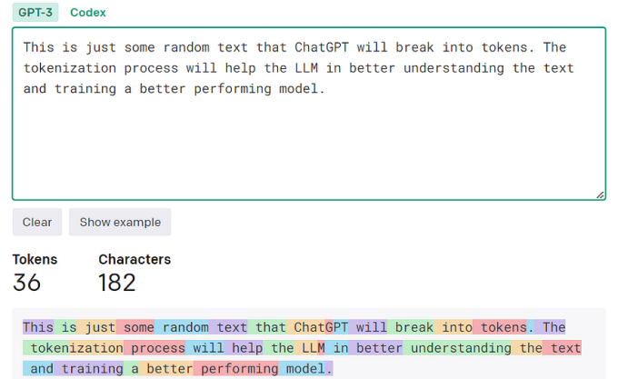

Hey there! I’m Ranjith Kumar, and today I’m taking you on a journey—from my first steps in deep learning to wrestling with large language models (LLMs) and even dipping my toes into reinforcement learning (RL). It’s been a wild ride of late-night coding, GPU rentals, and a YouTube obsession that changed everything. If you’re curious about how LLMs work, what makes attention mechanisms tick, or why RL is suddenly my new jam, you’re in the right place. Let’s break it all down, step by step, with plenty of visuals and beginner-friendly explanations along the way.
1. The Spark: PyTorch, Python, and a Hunger to Learn
Like many of you, my deep learning journey started with the basics: Python and PyTorch. In college, I learned just enough to build simple neural networks—but let’s be honest, I was the kid tweaking code and praying it wouldn’t crash. The real magic happened outside class, down the YouTube rabbit hole. I devoured tutorials on LLMs, trying to understand how models like GPT churn out human-like text. Most videos were decent, but they left me with more questions than answers. That is, until I found my deep learning hero: Andrej Karpathy.
2. Andrej Karpathy: The Teacher I Never Met
One day, I stumbled upon Andrej Karpathy’s video on GPT-2, and it was like the clouds parted. His chill, no-nonsense style made even the toughest concepts feel approachable. I became a fanboy overnight, binging everything he’d ever posted. Thanks to Andrej, I finally cracked two of the trickiest parts of LLMs: attention mechanisms and tokenization. If you’re new to these terms, don’t worry—we’re about to break them down together.
3. Attention Mechanisms: The Secret Sauce of LLMs
Let's start with attention mechanisms. Imagine you're reading this sentence: "The cat slept while the dog barked." Your brain naturally focuses on "cat" and "slept" to understand what's happening, right? Attention does the same for LLMs—it helps the model focus on the most important parts of the input when predicting the next word.
The attention mechanism can be broken down into a simple formula that shows how different parts work together:
QKT measures how well each word matches with others - like finding connections between words.
We divide by √dk to keep numbers manageable - think of it as turning down the volume when it's too loud.
Converts scores into percentages (0-100%) showing how much attention each word should get.
Multiply by V to get the weighted result - like mixing ingredients based on their importance in a recipe.
💡 Quick Example
Imagine processing the sentence "The cat chased the mouse":
- When focusing on "cat", the model pays more attention to "chased" (action)
- When focusing on "chased", it pays attention to both "cat" (subject) and "mouse" (object)
- This helps the model understand who did what to whom
4. Tokenization: Turning Words into Numbers
Before attention can do its thing, the model needs to “read” the text. That’s where tokenization comes in. Tokenization chops text into smaller pieces called tokens—think of them as the model’s vocabulary. For example:
- “I love AI” might become [“I”, “love”, “AI”].
- Trickier words like “playing” could split into [“play”, “ing”] using subword tokenizers like BPE (Byte Pair Encoding).
Each token gets a unique ID, and the model learns patterns from these IDs. Why’s this cool? It lets the model handle rare or new words by breaking them into familiar chunks. Imagine “unbelievable” as [“un”, “believ”, “able”]—even if it’s never seen the full word, it can guess the meaning. Tokenization is the first step in turning messy human language into something a machine can process.
5. My First LLM: From Gibberish to “Almost Chatbot”
Armed with Andrej’s teachings, I decided to build my own LLM. I rented a GPU (because my laptop would’ve cried), slapped together a transformer in PyTorch, and got to work. I coded up multi-head attention—where the model runs attention multiple times in parallel to capture different relationships—and added positional encodings (more on those later). After training on a small dataset, my first output was… well, gibberish. Think “cat the the dog umm.” But with some tweaks to the learning rate and more data, it started forming actual sentences. Not chatbot-level, but I was stoked.
Andrej mentioned in one video that to make an LLM chatty, you need to fine-tune it on conversational data. I haven’t gotten there yet, but it’s on my to-do list. For now, I’m just happy I didn’t break anything.
6. The RL Detour: DeepSeek R1 and a Whole New World
Just when I thought I was getting comfy with LLMs, I stumbled across DeepSeek R1, a reasoning model that uses GRPO (Generalized Reward Policy Optimization). Cue the confusion—RL? What’s that? I’d barely scratched the surface, but suddenly I was diving headfirst into reinforcement learning. GRPO led me to PPO (Proximal Policy Optimization), the HER paper (Hindsight Experience Replay), curiosity learning, and more. RL was a beast, but I couldn’t look away.
Reinforcement Learning: Teaching Machines to Learn by Doing
Let’s break down RL for beginners. Imagine teaching a dog to fetch: you reward it with treats when it brings the ball and ignore it when it doesn’t. Over time, the dog learns that fetching = treats. RL works similarly: an agent takes actions in an environment, gets rewards (or penalties), and learns to maximize its total reward.
Here are the core pieces:
- Agent: The learner (e.g., a model or robot).
- Environment: The world the agent interacts with.
- Policy (π): The strategy the agent uses to pick actions—like “if I’m here, do this.”
- Reward Function: Defines what’s good or bad (e.g., +1 for fetching, -1 for ignoring).
- Value Function: Estimates how good a state is in the long run.
Unlike supervised learning, where you have labeled data, RL is all about trial and error. The agent explores, fails, and learns—like me trying to bake without a recipe. It’s slow and messy, but when it works, you’ve got a model that can play games, optimize schedules, or even drive cars.
7. Transformers: The Engine Behind LLMs
Now, let’s zoom back to LLMs and unpack the transformer architecture—the real MVP. Born from the “Attention is All You Need” paper, transformers ditched recurrent networks (RNNs) and went all-in on attention. Here’s how they work:
- Encoder: Takes the input (tokenized text), runs it through multiple layers of attention and feed-forward networks, and produces rich embeddings that capture the meaning of each token in context.
- Decoder: Uses the encoder’s output plus its own attention to generate text, one token at a time. It’s autoregressive, meaning it predicts the next word based on the previous ones.
- Multi-Head Attention: Runs attention multiple times in parallel, each “head” focusing on different aspects (like grammar or meaning).
- Positional Encodings: Since transformers don’t process sequentially, we add sine and cosine waves to the token embeddings to encode word order. Without this, “cat chased dog” and “dog chased cat” would look the same to the model!
Why are transformers so powerful? They process everything in parallel, making them fast, and attention lets them handle long-range dependencies. It’s why my baby LLM could eventually string sentences together, even if it’s not quite ready for prime time.
8. What’s Next? Fine-Tuning and RL Domination
I’m not done yet. My LLM needs fine-tuning on conversational data to chat like a human instead of a weird robot poet. And RL? I’ve got policy optimization on deck—more algorithms, more math, more coffee. The journey’s just heating up, and I’m here for it.
9. Your Turn!
Whew, you made it! If you’re into deep learning, LLMs, or RL, let’s geek out together. What’s your go-to resource? Any RL tricks up your sleeve? Drop a comment or ping me on socials:
Keep coding, stay curious, and embrace the chaos—it’s where the good stuff happens!